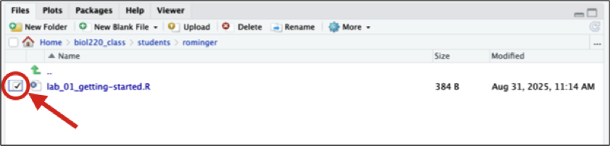

1 Getting started
As with all labs, please complete this lab using RStudio running on the UH Koa Server. Access the Koa Server at koa.its.hawaii.edu and use your UH credentials to log in.
1.1 Goals
- Learning how to start with Koa Server
- Use the command line
- Use functions in R
- Use vectors
- Use data frames
1.2 R, RStudio, and Koa Server
1.2.1 What is R?
R is a computer program that allows an extraordinary range of statistical calculations. It is a free program, mainly written by voluntary contributions from statisticians around the world. R is available on most operating systems, including Windows, Mac OS, and Linux.
R can make graphics and do statistical calculations. It is also a full-fledged computing language. In this manual, we will only scratch the surface of what R can do.
1.2.2 What is RStudio?
RStudio is a separate program, also free, that provides a more elegant front end for R. RStudio allows you to easily organize separate windows for R commands, graphic, help, etc. in one place.
For this course, you won’t need R and RStudio installed on your own device because we will work on the Koa Server. However, if you wish to install them on your device, go to https://rstudio.com/products/rstudio/download/ for instructions about getting set up.
1.2.3 What is the Koa Server?
The Koa Server allows you to run a hosted version of RStudio in the cloud that allows you to run R without having to download anything on your personal computer or confirgure your personal computer. You access the Koa Server from your browser, and conveniently you can access it from any computer or tablet.
1.2.4 Getting started with on the Koa Server
Follow the instructions on the “Setup” page for setting yourself up on the Koa Server.
Once done, proceed with the rest of the lab below.
1.3 Learning the Tools
Once you have launched your RStudio session on the Koa Server you should see a new window with a menu bar at the top and three main panels.
The left panel is called the “Console”—this is where you type commands to give instructions to R and typically where you see R’s answers to you.
The top right panel can show various different pieces of information. We will not make extensive use of this panel in our class, but you can note that the “Environment” tab in this panel shows all the objects (more on that below) that you have created in your current R session.
The bottom left panel, as you already know, shows the folders and files you have access to. You should always make sure you are working in the folder named after your UH username.
This bottom left panel is also where help documents will be rendered (in the tab called “Help”) and data visualizations will be shown (in the tab called “Plots”).
Once you click on an R script to open it, you Console gets pushed down to the bottom left panel and the script appears in the top left panel.

1.3.1 The Console
You can type commands into the Console where there is a prompt (which will look like a > sign at the bottom of the window). The Console has to be the selected window. (Clicking anywhere in the Console selects it.)
The > prompt is R’s way of inviting you to give it instructions. You communicate with R by typing commands after the > prompt.
Type “2 + 2” at the > prompt, and hit return. You’ll see that R can work as a calculator (among its many other uses). It will give you the answer 4 and it will label that answer with [1] to indicate that it is the first element in the answer. (This is sort of annoying when the answers are simple like this, but can be very valuable when the answers become more complex and have multiple elements.)
Remember, you don’t type the > sign. The > is the prompt that R gives saying it is ready for input. We reproduce it here so you can see which is input (in blue) and which is output (in black or red).
2 + 2[1] 4You can use a wide variety of math functions to make calculations here, e.g., log() calculates the log of a number:
log(42)[1] 3.73767(By default, this gives the natural log with base \(e\).)
Parentheses are used both as a way to group elements of the calculation and also as a way to denote the arguments of functions. (The “arguments” of a function are the set of values given to it as input.) For example, log(3) is applying the function log() to the argument 3.
Another mathematical function that often comes in handy is the square root function, sqrt(). For example, the square root of 4 is:
sqrt(4)[1] 2To calculate a value with an exponent, used the ^ symbol. For example \(4^3\) is written as:
4^3[1] 64Note how R ignores white space when it’s not in quotes (we’ll come back to quotes later):
4^3[1] 644 ^ 3[1] 64Of course, math functions can be combined to give an infinite possibility of mathematical expressions. For example,
\[\frac{1}{\sqrt{2 \pi \times 3.1^2}} e^{-\frac{(12 - 10.7) ^ 2}{2 \times 3.1}}\]
can be calculated with
1 / sqrt(2 * pi * 3.1^ 2) * exp(-(12 - 10.7)^2 / (2 * 3.1))[1] 0.09798692Remember parentheses are used both to pass arguments to functions (like exp(-(12 - 10.7)^2 / (2 * 3.1))) but also to group mathematical operations. For example, the argument passed to exp() is -(12 - 10.7)^2 / (2 * 3.1). We need all those parentheses to make sure the fraction is correctly computed as \(-\frac{(12 - 10.7) ^ 2}{2 \times 3.1}\). If we didn’t have the parentheses around (12 - 10.7)^2 and instead wrote -12 - 10.7^2 / (2 * 3.1), that would be valid code, but it would calculate an answer to the wrong equation:
\[-12 - \frac{10.7^2}{(2 \times 3.1)}\]
1.3.2 Saving your code
When you analyze your own data, we strongly recommend that you keep a record of all commands used, along with copious notes, so that weeks or years later you can retrace the steps of your earlier analysis.
In RStudio you can create a plain text file (sometimes called a script), which contains R commands that can be reloaded and used at a later date. We create scripts for you for every assignment where you can enter and save your commands.
While you’re “learning the tools” you can copy and paste any commands that you want from the the lab instructions, the Console (do not include the > prompt in the script), or type directly into the script. Save this script for later reference by hitting “Save” under the “File” menu. In the future you can open this file to have those commands available for use again.
It is a good habit to type all your commands in the script window and run them from there, rather than typing directly into the console. This lets you save a record of your session so that you can more easily re-create what you have done later.
FYI, if you want to create a new, blank R script, here’s how: under the menu at the top, choose “File”, then “New File”, and then “R Script”. Follow the prompts to save the new file.
1.3.4 Functions
Most of the work in R is done by functions. A function has a name and one or more arguments. For example, log(4) is a function that calculates the log in base \(e\) for the value 4 given as input.
Sometimes functions have optional input arguments. For the function log(), for example, we can specify the optional input argument base to tell the function what base to use for the logarithm. If we don’t specify the base variable, it has a default value of base = e. To get a log in base 10, for example, we would use:
log(4, base = 10)[1] 0.602061.3.5 Defining variables
In R, we can store information of various sorts by assigning them to variables. For example, if we want to create a variable called x and give it a value of 4, we would write
x <- 4The middle bit of this—a less than sign and a hyphen typed together to make something that looks a little like a left-facing arrow – tells R to assign the value on the right to the variable on the left. After running the command above, whenever we use x in a command it would be replaced by its value 4. For example, if we add 3 to x, we would expect to get 7.
x + 3[1] 7Variables in R can store more than just simple numbers. They can store lists of numbers, functions, graphics, etc., depending on what values get assigned to the variable.
We can always reassign a new value to a variable. If we now tell R that x is equal to 32
x <- 32then x takes its new value:
x[1] 321.3.6 Names
Naming variables and functions in R is pretty flexible.
A name has to start with a letter, but that can be followed by any combination of letters, numbers, and underscores (_). Names cannot have spaces or any character other than letters, numbers, and underscores, for example $, -, and % are not allowed. Technically, periods (.) are allowed in names, but not reccomended excpet for specific uses outside the scope of this course.
Names in R are case-sensitive, which means that Weights and weights are completely different things to R. This is a common and incredibly frustrating source of errors in R.
It’s a good idea to have your names be as descriptive as possible, so that you will know what you meant later on when looking at it. (However, if they get too long, it becomes painful and error prone to type them each time we use them, so this, as with all things, requires moderation.)
Sometimes clear naming means that it is best to have multiple words in the name, but we can’t have spaces. Therefore a common approach is like we saw in the previous section, to chain the words with underscores (not hyphens!), as in weights_before_hospital. (Another solution to make separate words stand out in a variable name is to vary the case: weightsBeforeHospital. This is called “Camel Case” because the capital letters are like camel humps.)
1.3.7 Vectors
One useful feature of R is the ability to apply functions to an entire collection of numbers. The technical term for a set of numbers is “vector”. For example, the following code will create a vector of six numbers:
c(78, 85, 64, 54, 102, 98.6)[1] 78.0 85.0 64.0 54.0 102.0 98.6c() is a function that creates a vector, containing the items given in its arguments. To help you remember, you could think of the function c() meaning to “combine” some elements into a vector.
Let’s add a little extra here to make the computer remember this vector. Let’s assign it to a variable, called temperatureF (because these numbers are actually a set of temperatures in degrees Fahrenheit):
temperatureF <- c(78, 85, 64, 54, 102, 98.6)The combination of the less than sign and the hyphen makes an arrow pointing from right to left—this tells R to assign the stuff on the right to the name on the left. In this case we are assigning a vector to the variable temperatureF.
Inputting this into R causes no obvious output, but R will now remember this vector of temperatures under the name temperatureF. We can view the contents of the vector temperatureF by simply typing its name:
temperatureF[1] 78.0 85.0 64.0 54.0 102.0 98.6The power of vectors is that R can do the same calculation on all elements of a vector with one command. For example, to convert a temperature in Fahrenheit to Celsius, we would want to subtract 32 and multiply times 5/9. We can do that for all the numbers in this vector at once:
temperatureC <- (temperatureF - 32) * 5 / 9
temperatureC[1] 25.55556 29.44444 17.77778 12.22222 38.88889 37.00000To pull out one of the numbers in this vector, we add square brackets after the vector name, and inside those brackets put the index of the element we want. (The “index” is just a number giving the location in the vector of the item we want. The first item has index 1, etc.) For example, the second element of the vector temperatureC is
temperatureC[2][1] 29.44444One of the ways to slip up in R is to confuse the [square brackets] which pull out an element of a vector, with the (parentheses), which is used to enclose the arguments of a function.
Vectors can also operate mathematically with other vectors. For example, imagine you have a vector of the body weights of patients before entering hospital (weight_before_hospital) and another vector with the same patient’s weights after leaving hospital (weight_after_hospital). You can calculate the change in weight for all these patients in one command, using vector subtraction:
weight_before_hospital <- c(100, 102)
weight_after_hospital <- c(98, 99)
weight_change_during_hospital <- weight_before_hospital - weight_after_hospitalThe result will be a vector that has each patient’s change in weight.
1.3.8 Basic calculation examples
In this course, we’ll learn how to use a few dozen functions, but let’s start with a couple of basic ones.
The function mean() does just what it sounds like: it calculates the sample mean (that is, the average) of the vector given to it as input. For example, the mean of the vector of the temperatures in degrees Celsius from above is 26.81481:
mean(temperatureC)[1] 26.81481Another simple (and simply named) function calculates the sum of all numbers in a vector: sum().
sum(temperatureC)[1] 160.8889To count the number of elements in a vector, use length().
length(temperatureC)[1] 6This shows that there are 6 temperature values in the vector that make up the vector temperatureC.
1.3.9 Reading a data file
In this course, we have saved the data in a “comma-separated variable” format. All files in this format ought to have “.csv” as the end of their file name. A CSV file is a plain text file, easily read by a wide variety of programs. Each row in the file (besides the first row) is the data for a given individual, and for each individual each variable is listed in the same order, separated by commas. It’s important to note that you can’t have commas anywhere else in the file, besides the separators.
The first row of a CSV file should be a “header” row, which gives the names of each variable, again separated by commas.
For examples in this tutorial, let’s use a data set about the passengers of the RMS Titanic. One of the data sets in the folder of data attached to this lab is called “titanic.csv”. This is a data set of 1313 passengers from the voyage of this ship, which contains information about some personal info about each passenger as well as whether they survived the accident or not.
To import a CSV file into R, use the read.csv() function as in the following command. The long string in the quotes is how we tell R where to find the file we want to read in. Note: you will need to replace <username> with your actual UH username, for example I would replace <username> with rominger. In this case, the file is in the data folder, itself in the student’s <username folder, itself in the biol220_class folder. All data we use will be found in the data folder at this location.
titanic_data <- read.csv("biol220_class/students/<username>/data/titanic.csv")Here we have given the name titanic_data to the object in R that contains all this passenger data. Of course, if you wanted to load a different data set, you would be better off giving it a more apt name than “titanic_data”.
To see if the data loads appropriately, you might want to run the command
summary(titanic_data) passenger_class name age embarked
Length:1313 Length:1313 Min. : 0.1667 Length:1313
Class :character Class :character 1st Qu.:21.0000 Class :character
Mode :character Mode :character Median :30.0000 Mode :character
Mean :31.1942
3rd Qu.:41.0000
Max. :71.0000
NA's :680
home_destination sex survive
Length:1313 Length:1313 Length:1313
Class :character Class :character Class :character
Mode :character Mode :character Mode :character
which will list all the variables and some summary statistics for each variable.
1.3.10 Intro to data frames
A data frame is a way that R can store a data set on a number of individuals. A data frame is a collection of columns; each column contains the values of a single variable for all individuals. The values of each individual occur in the same order in all the columns, so the first value for one variable represents the same individual as the first value in the lists of all other variables.
The function read.csv() loads the data it reads into a data frame.
The data frame is usually given a name, which is used to tell R’s functions which data set to use. For example, in the previous section we read in a data set to a data frame that we called titanic_data. This data frame now contains information about each of the passengers on the Titanic. This data frame has seven variables, so it has seven columns (passenger_class, name, age, embarked, home_destination, sex, and survive).
Very importantly, we can grab one of the columns from a data frame by itself. We write the name of the data frame, followed by a $, and then the name of the variable.
For example, to show a list of the age of all the passengers on the Titanic, use
titanic_data$ageThis will show a vector that has the values for this variable age, one for each individual in the data set.
Note, when looking at long vectors or data frames, it’s convenient to use the head function, which only shows the first 6 elements, not the whole huge vector or data frame.
head(titanic_data$age)[1] 29.0000 2.0000 30.0000 25.0000 0.9167 47.00001.3.11 Adding a new column
Sometimes we would like to add a new column to a data frame. The easiest way to do this is to simply assign a new vector to a new column name, using the $.
For example, to add the log of age as a column in the titanic_data data frame, we can write
titanic_data$log_age <- log(titanic_data$age)You can run the command head(titanic_data) to see that log_age is now a column in titanic_data.
1.3.12 Choosing subsets of data
Sometimes we want to do an analysis only on some of the data that fit certain criteria. For example, we might want to analyze the data from the Titanic using only the information from females. The easiest way to do this is to use the subset function.
In the titanic data set there is a variable named sex. We can create a new data frame that includes only the data from passengers recorded as female with the following command:
titanic_female_data <- subset(titanic_data, sex == "female")
head(titanic_female_data) passenger_class name age embarked
1 1st Allen,MissElisabethWalton 29 Southampton
2 1st Allison,MissHelenLoraine 2 Southampton
4 1st Allison,MrsHudsonJ.C.(BessieWaldoDaniels) 25 Southampton
7 1st Andrews,MissKorneliaTheodosia 63 Southampton
9 1st Appleton,MrsEdwardDale(CharlotteLamson) 58 Southampton
12 1st Astor,MrsJohnJacob(MadeleineTalmadgeForce) 19 Cherbourg
home_destination sex survive log_age
1 StLouis,MO female yes 3.3672958
2 Montreal,PQ/Chesterville,ON female no 0.6931472
4 Montreal,PQ/Chesterville,ON female no 3.2188758
7 Hudson,NY female yes 4.1431347
9 Bayside,Queens,NY female yes 4.0604430
12 NewYork,NY female yes 2.9444390This new data fame will include all the same columns as the original titanic_data, but it will only include the rows for which the sex was “female”.
Note that the syntax here requires a double == sign. In R (and many other computer languages), the double equal sign creates a statement that can be evaluated as TRUE or FALSE. Here we are asking, for each individual, whether sex is “female”.
1.4 Questions for Lab Report
Your lab report is due before the start of next week’s lab. When you’re finished, save it, export it, and upload it to Google Classroom to turn in the assignment.
To export your script from the RStudio session running on the Koa Server, select the radio button next to the script name.

Then click the gear icon titled “More” and from the drop-down menu select “Export.”
When prompted click “Download” and then save the script somewhere on your device. Once downloaded on your device, you can upload to Google Classroom.
To answer each of the questions below, in your script lab_01-getting-started.R write the question number as a comment, followed by any R code you use to answer the question, and give the answers as comments. It might look something like this:
# Questions
# 1. I followed directions to set up my lab report
# 2. Yes, I got the same answers!
# 3. Only text answers, no code
# Answer part 1
# Answer part 2
# 4. Text and code
# a.
x <- c(1, 2, 3) # you can also comment like this
# b.
mean(x)
# The mean of c(1, 2, 3) is 2. Here's what that means...Run the Learning the tools commands in R from your “scratch.R” script. Did you get the same answers as shown in the text? (Answer “yes”, “no”, or a more detailed explanation. You don’t need to re-run all the code and output here.)
For each of the following, come up with a variable name that would be appropriate to use in R for the listed variable:
| Variable | Name in R |
|---|---|
| Body temperature in Celsius | |
| How much aspirin is given per dose for a patient | |
| Number of televisions per person | |
| Height (including neck and extended legs) of giraffes |
Use R to calculate:
- \(15 \times 17\)
- \(13^3\)
- \(\text{log}_e(14)\) (natural log)
- \(\text{log}_{10}(100)\) (base 10 log)
- \(\sqrt{81}\)
Weddell seals live in Antarctic waters and take long strenuous dives in order to find fish to feed upon. Researchers (Williams et al. 2004) wanted to know whether these feeding dives were more energetically expensive than regular dives (perhaps because they are deeper, or the seal has to swim further or faster). They measured the metabolic costs of dives using the oxygen consumption of 10 animals (in ml O\(_2\) / kg) during a feeding dive. Here are the data:
71.0, 77.3, 82.6, 96.1, 106.6, 112.8, 121.2, 126.4, 127.5, 143.1
For the same 10 animals, they also measured the oxygen consumption in non-feeding dives. With the 10 animals in the same order as before, here are those data:
42.2, 51.7, 59.8, 66.5, 81.9, 82.0, 81.3, 81.3, 96.0, 104.1
- Make a vector for each of these lists, and give them appropriate names.
- Confirm (using R) that both of your vectors have the same number of individuals in them.
- Create a vector called
metabolism_differenceby calculating the difference in oxygen consumption between feeding dives and nonfeeding dives for each animal. - What is the average difference between feeding dives and nonfeeding dives in oxygen consumption?
- The arithmetic mean is calculated by adding up all the numbers and dividing by how many numbers there are. Calculate the mean of these numbers using
sum()andlength(). Did you get the same answer as with usingmean()? - Another appropriate way to represent the relationship between these two numbers would be to take the ratio of O\(_2\) consumption for feeding dives over the O\(_2\) consumption of nonfeeding dives. Make a vector which gives this ratio for each seal.
- Sometimes ratios are easier to analyze when we look at the log of the ratio. Create a vector which gives the log of the ratios from the previous step. (Use the natural log.) What is the mean of this log-ratio?
The data file called “countries.csv” in the data folder contains information about all the countries on Earth1. Each row is a country, and each column contains a variable.
- Use
read.csv()to read the data from this file into a data frame calledcountries. - Use
summary()to get a quick description of this data set. What are the first three variables? - Using the output of
summary(), how many countries are from Africa in this data set? - What kinds of variables (i.e., categorical or numerical) are continents,
cell_phone_subscriptions_per_100_people_2012,total_population_in_thousands_2015, andfines_for_tobacco_advertising_2014? (Don’t go by their variable names – look at the data in the summary results to decide.) - Add a new column to your countries data frame that has the difference in ecological footprint between 2012 and 2000. What is the mean of this difference? (Note: this variable will have “missing data”, which means that some of the countries do not have data in this file for one or the other of the years of ecological footprint. By default, R doesn’t calculate a mean unless all the data are present. To tell R to ignore the missing data, add an option to the
mean()command that saysna.rm=TRUE. We’ll learn more about this later.)
- Use
Using the countries data again, create a new data frame called
africa_data, that only includes data for countries in Africa. What is the sum of thetotal_population_in_thousands_2015for this new data frame?
These data mainly come from the World Health Organization, but the Continent list comes from https://datahub.io/ and the ecological footprint and cell phone data come from http://www.nationmaster.com.↩︎
1.3.3 Comments
In scripts, it can be very useful to save a bit of text which is not to be evaluated by R. You can leave a note to yourself (or a collaborator) about what the next line is supposed to do, what its strengths and limitations are, or anything else you want to remember later. To leave a note, we use “comments”, which are a line of text that starts with the hash symbol
#. Anything on a line after a#will be ignored by R.